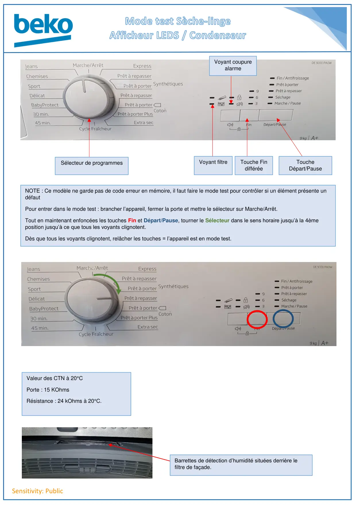
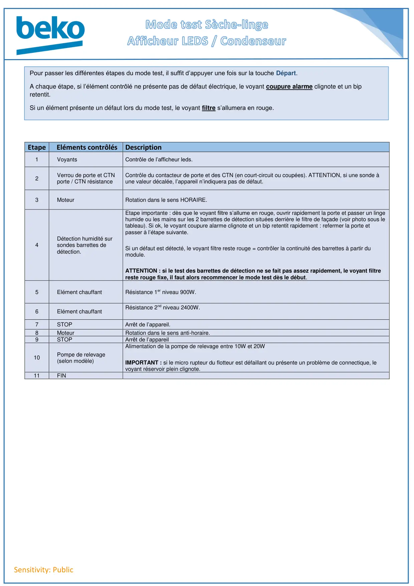

Mode Test Afficheur Leds Condenseur

Sensitivity: PublicSélecteur de programmesVoyant filtreVoyant coupurealarmeTouche FindifféréeToucheDépart/PauseNOTE : Ce modèle ne garde pas de code erreur en mémoire, il faut faire le mode test pour contrôler si un élément présente undéfautPour entrer dans le mode test : brancher l’appareil, fermer la porte et mettre le sélecteur sur Marche/Arrêt.Tout en maintenant enfoncées les touches Fin et Départ/Pause, tourner le Sélecteur dans le sens horaire jusqu’à la 4èmeposition jusqu’à ce que tous les voyants clignotent.Dès que tous les voyants clignotent, relâcher les touches = l’appareil est en mode test.Valeur des CTN à 20°CPorte : 15 KOhmsRésistance : 24 kOhms à 20°C.Barrettes de détection d’humidité situées derrière lefiltre de façade.
1 / 2
Sensitivity: PublicEtape Eléments contrôlésDescription1VoyantsContrôle de l’afficheur leds.2Verrou de porte et CTNporte / CTN résistanceContrôle du contacteur de porte et des CTN (en court-circuit ou coupées). ATTENTION, si une sonde àune valeur décalée, l’appareil n’indiquera pas de défaut.3MoteurRotation dans le sens HORAIRE.4Détection humidité sursondes barrettes dedétection.Etape importante : dès que le voyant filtre s’allume en rouge, ouvrir rapidement la porte et passer un lingehumide ou les mains sur les 2 barrettes de détection situées derrière le filtre de façade (voir photo sous letableau). Si ok, le voyant coupure alarme clignote et un bip retentit rapidement : refermer la porte etpasser à l’étape suivante.Si un défaut est détecté, le voyant filtre reste rouge = contrôler la continuité des barrettes à partir dumodule.ATTENTION : si le test des barrettes de détection ne se fait pas assez rapidement, le voyant filtrereste rouge fixe, il faut alors recommencer le mode test dès le début.5Elément chauffantRésistance 1er niveau 900W.6Elément chauffantRésistance 2nd niveau 2400W.7STOPArrêt de l’appareil.8MoteurRotation dans le sens anti-horaire.9STOPArrêt de l’appareil10Pompe de relevage(selon modèle)Alimentation de la pompe de relevage entre 10W et 20WIMPORTANT : si le micro rupteur du flotteur est défaillant ou présente un problème de connectique, levoyant réservoir plein clignote.11FINPour passer les différentes étapes du mode test, il suffit d’appuyer une fois sur la touche Départ.A chaque étape, si l’élément contrôlé ne présente pas de défaut électrique, le voyant coupure alarme clignote et un bipretentit.Si un élément présente un défaut lors du mode test, le voyant filtre s’allumera en rouge.
2 / 2